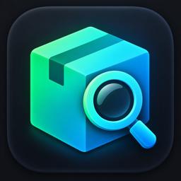

WORKSPACE / SETTINGS
设置
本地优先：分析结果、缓存与日志都只保留在这台电脑。
v2.10.6
外观与语言立即生效
主题
跟随系统，或固定浅色 / 深色。
跟随系统浅色深色
界面语言
部分技术术语保持英文，便于与报告对照。
简体中文
紧凑列表
减少表格行高，适合大屏浏览。
系统集成需手动启用
在资源管理器中显示应用图标
默认关闭，仅在本机注册缩略图处理器；关闭失败会如实提示。
文件关联
仅注册 .apk / .ipa 的“打开方式”，不抢占系统默认程序。
安装器默认注册
安装包不会写入系统集成；升级不会自动删除旧版本注册。
ALWAYS OFF
工具路径
adb
用于安装、设备管理与日志。
/opt/homebrew/bin/adb可用
Java
某些签名与安装工具需要；未配置时相关功能会明确降级。
/usr/bin/java未检测
自动检测
重新扫描 PATH 与常见安装位置。
诊断与日志
诊断日志
记录解析阶段与失败原因，不包含安装包内容。
日志目录
仅本机访问，可随时清理。
清理缓存
删除解析中间结果与缩略图缓存，不删除原始安装包。
隐私
完全本地分析
默认且不可关闭；安装包不会上传到任何服务器。
ALWAYS ON
外部样本目录
真实样本测试只在本地环境变量中配置。
NOT SET
关于

AppInfoTool2.10.6 · STATIC INSPECTOR · LOCAL-FIRST
STABLE更新通道
稳定版只包含已验证的构建。
稳定版
开源许可
第三方依赖与字体许可。
LOCAL ONLY
NOTHING SYNCED
NO ACCOUNT
STATIC INSPECTOR · v2.10.6
V4 / PAPER & SIGNAL · SETTINGSLOCAL-FIRST · 1440×1024